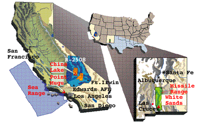

| The Anomalies in Navy Electrolyte
Experiments at China Lake
These novel experimental anomalies, like those of Cold Fusion, were caused by using time as an energy source by transducing time-energy into spatial energy. Transducing one microsecond per second of time into spatial EM energy, yields nearly 1011 watts of power
|